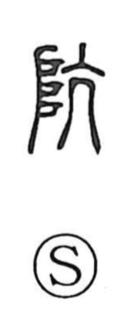

坑

Uncategorized
Kun: ana | On: kou
pit ・ shaft ・ mine shaft ・ hole
Explanation
A phono-semantic character: 土 situates the meaning in earth, while 亢 provides the sound kō and originally depicts the throat with the arteries standing out. In words like 伉慨 and 抗, 亢 evokes a taut, straight, unyielding stance. Applied to earth, it suggests driving a straight passage into the ground—boring sideways or down to open a hole against the surrounding mass. Hence 坑 means a hole, especially a vertical pit or shaft.